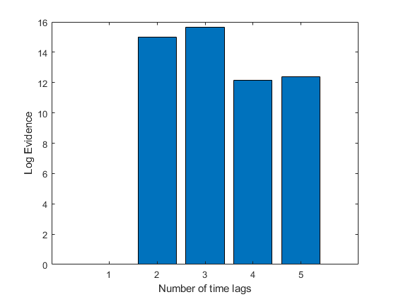
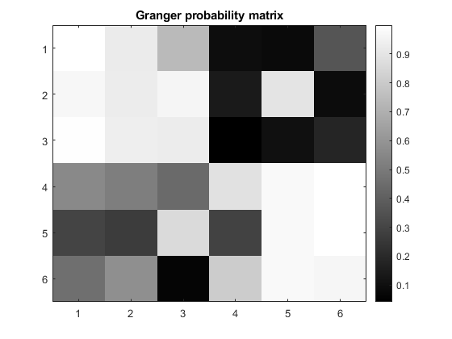

secs=1;
ns=250;
t=[1/ns:1/ns:secs]';
d=6;
f1=10;
clear x
dev=1*ones(1,6);
y=sin(2*pi*f1*t);
y2=sin(2*pi*12.5*t);
x(:,1)=y+dev(1)*randn(size(t));
for i=2:3,
x(:,i)=y+dev(i)*randn(size(t));
end
for i=4:6,
x(:,i)=y2+dev(i)*randn(size(t));
end
for i=1:6,
x(:,i)=x(:,i)/std(x(:,i));
x(:,i)=x(:,i)-mean(x(:,i));
end
disp('Estimating order of MAR model');
logev=[];
for m=1:5,
disp(sprintf('Fitting MAR model with %d components',m));
mar=spm_mar(x,m);
logev=[logev; mar.fm];
end
logev=logev-min(logev);
figure
bar(logev);
xlabel('Number of time lags');
ylabel('Log Evidence');
[tmp, p_sel]=max(logev);
disp(sprintf('Using MAR(%d) model ..',p_sel));
[mar,y,y_pred]=spm_mar(x,p_sel);
[G,Psig] = spm_granger (mar);
disp(' ');
disp('True causality matrix');
[ones(3,3),zeros(3,3);zeros(3,3),ones(3,3)]
disp('Granger probability matrix:');
Peffect=ones(6,6)-Psig;
Peffect
disp('where ijth entry is our belief that time series i Granger causes j');
figure
imagesc(Peffect);
title('Granger probability matrix');
colormap gray
colorbar
disp(' ');
disp('Inferred Granger causality matrix:');
disp('This is Granger Prob matrix thresholded at 0.95');
Peffect>0.95
Estimating order of MAR model
Fitting MAR model with 1 components
Fitting MAR model with 2 components
Fitting MAR model with 3 components
Fitting MAR model with 4 components
Fitting MAR model with 5 components
Using MAR(3) model ..
True causality matrix
ans =
1 1 1 0 0 0
1 1 1 0 0 0
1 1 1 0 0 0
0 0 0 1 1 1
0 0 0 1 1 1
0 0 0 1 1 1
Granger probability matrix:
Peffect =
1.0000 0.9246 0.7394 0.0910 0.0795 0.3613
0.9675 0.9256 0.9590 0.1400 0.8978 0.0881
0.9936 0.9339 0.9256 0.0421 0.1025 0.1821
0.5558 0.5160 0.4399 0.8862 0.9756 0.9998
0.3002 0.2700 0.8614 0.2911 0.9765 0.9983
0.4587 0.5789 0.0627 0.8089 0.9744 0.9655
where ijth entry is our belief that time series i Granger causes j
Inferred Granger causality matrix:
This is Granger Prob matrix thresholded at 0.95
ans =
6×6 logical array
1 0 0 0 0 0
1 0 1 0 0 0
1 0 0 0 0 0
0 0 0 0 1 1
0 0 0 0 1 1
0 0 0 0 1 1
 